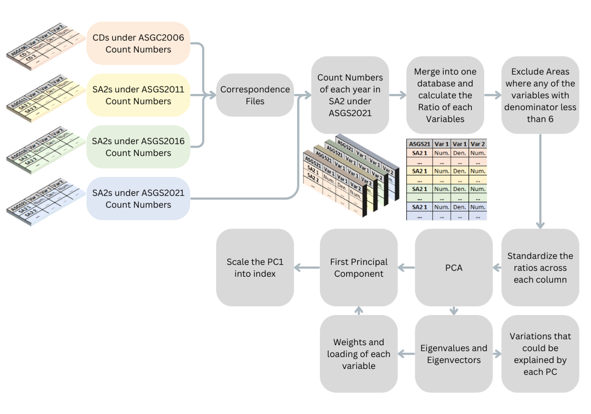

Year | IRSD | LIRSD | WLIRSD | LIRSD-PC2 | WLIRSD-PC2 |
|---|---|---|---|---|---|
2006 | 39% | 36.55% | 42.46% | 21.69% | 22.14% |
2011 | 44% | 38.75% | 45.97% | 20.92% | 20.86% |
2016 | 43% | 38.33% | 45.05% | 21.79% | 22.03% |
2021 | 37% | 35.43% | 44.07% | 19.98% | 22.49% |
Overall | 34.29% | 40.63% | 19.47% | 20.08% |
Bivariate Outcome Small Area Estimation using Bayesian Hierarchical Models
A Methodological Framework for Improved Precision and Efficiency
Mu Li
School of Demography
Supervised by
Dr. Bernard Baffour, Dr. Alice Richardson, Dr. Susanna Cramb
10th November 2024
1 Introduction
- Overview of PhD Research:
- This research focuses on two distinct, but interconnected areas of study: spatial model and socio-economic status measurement.
- The first part introduces a longitudinal socio-economic index to better capture changes over time, enhancing traditional measures which are typically static.
- The second part addresses the use of advanced statistical models to improve disease mapping and small area estimation, particularly focusing on the challenges of data sparsity and bivariate outcomes.
- Goal: Contributions to public health and socio-economic analysis through statistical modeling.
2 Part One: Constructing a Socio-Economic Index for Longitudinal Analysis
2.1 Background and Socio-Economic Indices
- Composite indices are widely used in socio-economic research
To measure socio-economic status is a complex task, as it is a multidimensional concept that encompasses various aspects of life, such as income, education, occupation and house conditions (Zagórski 1986). Constructing a composite index is a common approach to measure socio-economic status, as it can provide a single summary measure that captures the multidimensional nature of socio-economic status.
- Principal Component Analysis (PCA) is a common method to construct composite indices
When given multiple indicators of socio-economic status, PCA can be used to construct a composite index by providing a linear combination of the indicators that maximizes the variance of the data. The first principal component is often used as the composite index, as it captures the most variation in the data, where this variation is assumed to be related to socio-economic status (Mazziotta and Pareto 2019).
2.1.1 PCA steps
PCA is a statistical method that can be used to reduce the dimensional of a dataset by transforming the data into a new set of uncorrelated variables called principal components.
Standardize the data Z_{i,j} = \frac{Y_{i,j} - \bar{y}_{j}}{s_j}
In the case of PCA with weights, the standardized value need to be weighted by the corresponding weight, where the mean and standard deviation are calculated based on the weighted data. Here we list the simple formula for the weighted mean and standard deviation. \bar{y}_{j} = \frac{\sum_{i=1}^{n} w_i Y_{i,j}}{\sum_{i=1}^{n} w_i} \quad \quad s_{j} = \sqrt{\frac{\sum_{i=1}^{n} w_i (Y_{i,j} - \bar{y}_{j})^2}{\sum_{i=1}^{n} w_i}}
Calculate the covariance matrix
The empirical covariance matrix \mathbf{C} is a p \times p matrix that captures the pairwise relationships between variables. In the case of PCA with weights, the covariance matrix is computed based on the weighted standardized data: C_{j,k} = \frac{1}{\sum_{i=1}^{n} w_i} \sum_{i=1}^{n} w_i Z_{i,j} Z_{i,k}
Eigenvalue Decomposition
The third step in PCA is to perform an eigenvalue decomposition of the covariance matrix. The eigenvalue decomposition of the covariance matrix \mathbf{C} yields a set of eigenvectors and eigenvalues. The eigenvectors represent the directions of maximum variance in the data, while the eigenvalues represent the amount of variance explained by each eigenvector. The eigenvectors are arranged in descending order based on their corresponding eigenvalues. Here we denote the kth eigenvector as \mathbf{v}_{k}, and the kth eigenvalue is denoted as \lambda_{k}.
Principal Component Scores
The fourth step in PCA is to compute the principal component scores. The principal component scores represent the linear combinations of the original variables that capture the maximum amount of variance in the data. The kth principal component score for the ith observation can be calculated as: PC_{i,k} = \sum_{j=1}^{p} \alpha_{j,k} Z_{i,j}
where \alpha_{j,k} is the loading of the jth variable on the kth principal component, can be calculated from the eigenvectors and eigenvalues. The formula for the loading is: \alpha_{j,k} = \sqrt{\lambda_{k}} v_{j,k}
where v_{j,k} is the jth element of the kth eigenvector and the \lambda_{k} is the kth eigenvalue as we mentioned in the previous step.
2.2 Historical Review of the SEIFA-IRSD
- The current recognized form of SEIFA first appeared in 1986 and has been updated every five years since then.
Five indices are produced from 1986 to 1996, where there were two different indices produced for urban and rural areas for measuring socio-economic advantage and disadvantage. ABS justifies this urban/rural split, citing significant structural differences between variables in urban and rural areas.
- The 2001 SEIFA replaced two indices with one, which was the IRSAD. And four indices were produced since then until 2021, which are IRSD, IRSAD, IEO and IER.
Among these indexes, the IRSD is regarded as the most established and widely used, as it encompasses all available variables that reflect or measure socio-economic disadvantage (Trewin 2004). Furthermore, the IRSD is recognized for its consistency, as it has maintained a nearly identical methodological approach and variables in its construction process across various periods (Trewin 2004; Statistics 2023).
2.2.1 Variable Selection for IRSD
| Dimension | Variable | Loading | Variable Description |
|---|---|---|---|
| Income | INC_LOW | -0.76 | % People with stated annual household equivalized income between $13,000 and $20,799 (approx. 2nd and 3rd deciles) |
| Education | NOQUAL | -0.76 | % People aged 15 years and over with no post-school qualifications |
| NOSCHOOL | -0.44 | % People aged 15 years and over who did not go to school | |
| Employment | UNEMPLOYED | -0.7 | % People (in the labour force) unemployed |
| Occupation | OCC_LABOUR | -0.76 | % Employed people classified as Labourers |
| OCC_DRIVERS | -0.51 | % Employed people classified as Machinery Operators and Drivers | |
| OCC_SERVICE_L | -0.44 | % Employed people classified as Low Skill Community and Personal Service Workers | |
| Housing | RENT_SOCIAL | -0.7 | % Households renting from a Government or Community organization |
| LOWRENT | -0.67 | % Households paying rent who pay less than $120 per week (excluding $0 per week) | |
| Miscellaneous | NONET | -0.85 | % Occupied private dwellings with no Internet connection |
| ONEPARENT | -0.67 | % Families that are one-parent families with dependent offspring only | |
| DISABILITYU70 | -0.61 | % People aged under 70 who have a long-term health condition or disability and need assistance with core activities | |
| NOCAR | -0.57 | % Occupied private dwellings with no car | |
| INDIGENOUS | -0.52 | % People who identified themselves as being Aboriginal and/or Torres Strait Islander origin | |
| OVERCROWD | -0.52 | % Occupied private dwellings requiring one or more extra bedrooms (based on Canadian National Occupancy Standard) | |
| DIVORCED | -0.51 | % People aged 15 years and over who are separated or divorced | |
| ENGLISHPOOR | -0.33 | % People who do not speak English well | |
| Total Number | 17 |
| Dimension | Variable | Loading | Variable Description |
|---|---|---|---|
| Income | INC_LOW | -0.9 | % People with stated annual household equivalized income between $1 and $20,799 (approx. 1st and 2nd deciles) |
| Education | NOYR12ORHIGHER | -0.75 | % People aged 15 years and over whose highest level of education is Year 12 or lower, including Certificate I and II |
| NOEDU | -0.44 | % People aged 15 years and over who have no educational attainment | |
| Employment | UNEMPLOYED | -0.74 | % People (in the labour force) unemployed |
| Occupation | OCC_LABOUR | -0.75 | % Employed people classified as “labourers” |
| OCC_DRIVERS | -0.52 | % Employed people classified as Machinery Operators and Drivers | |
| OCC_SERVICE_L | -0.5 | % Employed people classified as Low Skill Community and Personal Service Workers | |
| Housing | LOWRENT | -0.73 | % Occupied private dwellings paying rent less than $166 per week (excluding $0 per week) |
| Miscellaneous | CHILDJOBLESS | -0.85 | % Families with children under 15 years of age who live with jobless parents |
| NONET | -0.81 | % Occupied private dwellings with no Internet connection | |
| ONEPARENT | -0.71 | % One parent families with dependent offspring only | |
| DISABILITYU70 | -0.66 | % People aged under 70 who have a long-term health condition or disability and need assistance with core activities | |
| NOCAR | -0.56 | % Occupied private dwellings with no car | |
| OVERCROWD | -0.52 | % Occupied private dwellings requiring one or more extra bedrooms (based on Canadian National Occupancy Standard) | |
| SEP_DIVORCED | -0.54 | % People aged 15 years and over who are separated or divorced | |
| ENGLISHPOOR | -0.34 | % People who do not speak English well | |
| Total Number | 16 |
| Dimension | Variable | Loading | Variable Description |
|---|---|---|---|
| Income | INC_LOW | -0.91 | % People with stated annual household equivalized income between $1 and $25,999 (approx. 1st and 2nd deciles) |
| Education | NOYR12ORHIGHER | -0.77 | % People aged 15 years and over whose highest level of education is Year 12 or lower, including Certificate I and II |
| NOEDU | -0.43 | % People aged 15 years and over who have no educational attainment | |
| Employment | UNEMPLOYED | -0.75 | % People (in the labour force) unemployed |
| Occupation | OCC_LABOUR | -0.74 | % Employed people classified as “labourers” |
| OCC_DRIVERS | -0.54 | % Employed people classified as Machinery Operators and Drivers | |
| OCC_SERVICE_L | -0.53 | % Employed people classified as Low Skill Community and Personal Service Workers | |
| Housing | LOWRENT | -0.73 | % Occupied private dwellings paying rent less than $215 per week (excluding $0 per week) |
| Miscellaneous | CHILDJOBLESS | -0.83 | % Families with children under 15 years of age who live with jobless parents |
| NONET | -0.79 | % Occupied private dwellings with no Internet connection | |
| ONEPARENT | -0.67 | % One parent families with dependent offspring only | |
| DISABILITYU70 | -0.67 | % People aged under 70 who have a long-term health condition or disability and need assistance with core activities | |
| SEPDIVORCED | -0.55 | % People aged 15 years and over who are separated or divorced | |
| NOCAR | -0.49 | % Occupied private dwellings with no car | |
| OVERCROWD | -0.46 | % Occupied private dwellings requiring one or more extra bedrooms (based on Canadian National Occupancy Standard) | |
| ENGLISHPOOR | -0.3 | % People who do not speak English well | |
| Total Number | 16 |
| Dimension | Variable | Loading | Variable Description |
|---|---|---|---|
| Income | INC_LOW | -0.87 | % People with stated annual household equivalized income between $1 and $25,999 (approx. 1st and 2nd deciles) |
| Education | NOYR12ORHIGHER | -0.75 | % People aged 15 years and over whose highest level of education is Year 12 or lower, including Certificate I and II |
| NOEDU | -0.47 | % People aged 15 years and over who have no educational attainment | |
| Employment | UNEMPLOYED | -0.68 | % People (in the labour force) unemployed |
| Occupation | OCC_LABOUR | -0.74 | % Employed people classified as “labourers” |
| OCC_DRIVERS | -0.51 | % Employed people classified as Machinery Operators and Drivers | |
| OCC_SERVICE_L | -0.45 | % Employed people classified as Low Skill Community and Personal Service Workers | |
| Housing | LOWRENT | -0.71 | % Occupied private dwellings paying rent less than $250 per week (excluding $0 per week) |
| Miscellaneous | CHILDJOBLESS | -0.78 | % Families with children under 15 years of age who live with jobless parents |
| DISABILITYU70 | -0.63 | % People aged under 70 who have a long-term health condition or disability and need assistance with core activities | |
| ONEPARENT | -0.58 | % One parent families with dependent offspring only | |
| OVERCROWD | -0.51 | % Occupied private dwellings requiring one or more extra bedrooms (based on Canadian National Occupancy Standard) | |
| SEPDIVORCED | -0.51 | % People aged 15 years and over who are separated or divorced | |
| NOCAR | -0.43 | % Occupied private dwellings with no car | |
| ENGLISHPOOR | -0.35 | % People who do not speak English well | |
| Total Number | 15 |
Remarks on Variable Selection
- Addition of Variables
CHILDJOBLESSwas added from 2011, which quantifies the percentage of families with children under age 15 and parents without employment
- Removal of Variables
RENT_SOCIALwas removed from 2011, since its skewed distribution and relatively high non-response rate made it less reliable as an indicator of socio-economic status.INDIGENOUSwas removed from 2011, as it was deemed to be a sensitive variable that could lead to complex interpretations issues.NONETwas removed from 2021, as it was removed from the Census data collection, since having a fixed Internet connection was no longer a reliable indicator of socio-economic status, as many people now use mobile devices and other ways to access the Internet.
- Changes in Variable Definitions
NOQUALwas changed toNOYR12ORHIGHER,NOSCHOOLwas changed toNOEDUfrom 2011, to better reflect the educational attainment of the population.
- Changes in Variable Reference Value
INC_LOWandLOWRENThad their reference values changed in each period with no pattern (not uniform, not distribution-based, not inflation-adjusted), which makes it difficult to compare the index across different periods.
| Wave | INC_LOW Reference Level | LOWRENT Reference Level |
|---|---|---|
| 2006 | Income between $13,000 and $20,799 (approx. 2nd and 3rd deciles) | Rent less than $120 per week (excluding $0 per week) |
| 2011 | Income between $1 and $20,799 (approx. 1st and 2nd deciles) | Rent less than $166 per week (excluding $0 per week) |
| 2016 | Income between $1 and $25,999 (approx. 1st and 2nd deciles) | Rent less than $215 per week (excluding $0 per week) |
| 2021 | Income between $1 and $25,999 (approx. 1st and 2nd deciles) | Rent less than $250 per week (excluding $0 per week) |
2.2.2 Geographical Boundary Changes
- Two systems of geographical boundaries in Australia
- ASGC: Australian Standard Geographical Classification before 2011
- ASGS: Australian Statistical Geography Standard after 2011, updated every five year
- SEIFA based on areal units
- CD: Census Collection District (ASGC) in 2006
- SA1: Statistical Area Level 1 (ASGS) in 2011 - 2021
- Larger spatial units: Population weighted average of CD/SA1
- Exclusions of areas with rules
- Non-residential and high non-response rates areas: such as airports, ports, and military bases
- One more phrase of exclusions in 2011, 2016, 2021: areas with less than 6 denominator in the calculation of the index
Number of Valid Areas in Constructing Index
When comparing the index, all index will be converted into the same geographical standard, which is SA2 ASGS 2021. The conversion process is done by population-weighted average provided by correspondence files from ABS (ABS 2021a)
| Index | Geographical Standards | 2006 | 2011 | 2016 | 2021 |
|---|---|---|---|---|---|
| IRSD | CD ASGC06 | 37448/38704 (96.75%) | |||
| SA1 ASGC11 | 52577/54508 (96.46%) | ||||
| SA1 ASGC16 | 55028/57523 (95.66%) | ||||
| SA1 ASGC21 | 59283/61845 (95.86%) | ||||
| Converted | SA2 ASGC21 | 2423/2473 (97.98%) | 2355/2473 (95.23%) | 2344/2473 (94.78%) | 2312/2473 (93.49%) |
| L-IRSD | CD ASGC06 | 37737/38704 (97.5%) | |||
| SA2 ASGC11 | 2123/2214 (95.89%) | ||||
| SA2 ASGC16 | 2200/2310 (95.24%) | ||||
| SA2 ASGC21 | 2372/2473 (95.92%) | ||||
| Converted | SA2 ASGC21 | 2392/2473 (96.72%) | 2343/2473 (94.74%) | 2347/2473 (94.9%) | 2366/2473 (95.67%) |
2.2.3 Loading of Variables in IRSD
Figure 1: Loading of Variables in IRSD
Remarks on Loading of Variables
- Proportion of Variance Explained
- IRSD accounted for 39% of the variation among variables in 2006, changing to 44% in 2011, 43% in 2016, and 37% in 2021
- Loading Trends
- Stability in the loadings of certain variables—such as
DISABILITYU70,SEPDIVORCED,ENGLISHPOOR,LOWRENT,NOYEAR12ORHIGHER,NOEDU,OCC_DRIVER, andOVERCROWD CHILDJOBLESSandONEPARENThave decreasing loadings over time - may be linked to changing societal attitudes towards marriage and divorce (Tucker and Crouter 2008) and improvements in the welfare system for single-parent families (Chiappori and Weiss 2006; Herbst and Kaplan 2016)INC_LOWincreased significantly between 2011 and 2016.
- Stability in the loadings of certain variables—such as
2.2.4 Limitations and Motivations for Longitudinal analysis
Challenges for Longitudinal Analysis
Inconsistent Variable Selection: The selection of variables for the index can vary across different years due to changes in data availability, definitions, or relevance.
Reference Value Shift: The reference value of each variable may change over time due to shifts in data collection methods, definitions, or population characteristics.
Spatial Boundary Changes: Changes in spatial boundaries, such as the merging or splitting of regions, can affect the comparability of data across years. Another issue that arises from the spatial boundary changes is the population distribution.
Standardization Issues: The standardization of variables may vary across years due to changes in data collection methods or definitions. Inconsistent standardization can lead to discrepancies in the index’s representation of socio-economic status over time.
Pattern Shift: The underlying patterns of socio-economic status may shift over time due to changes in economic conditions, social policies, or population characteristics. In detail, some variables may have different importance in different years, which may lead to the different interpretation of the index.
Motivations
In response to these challenges, we aim to develop an index that can longitudinally capture socio-economic status variance in Australia
Consistency: Based on the framework of the SEIFA as Australia provide one of the most comprehensive socio-economic indices with technical details and data availability and SEIFA is widely used in the research community with clear and transparent methodology
Comparability: The new index LIRSD and WLIRSD should be able to comparing with the traditional widely used SEIFA index, and can be used to track the socio-economic status of areas over time
Secondary Finding: Analysis the potential role of the second principal component of the constructed index
2.3 Development of the Longitudinal IRSD (L-IRSD) and PC2 Index
Trade-off between static and dynamic variable weights (Libório et al. 2022)
Single Indicator Approach: A single weights is determined and applied across all time period, which prioritize comparability, assuming the importance of variable on SES remains stable.
Multiple Indicator Approach: Weights are determined for each time period, which prioritize the capturing of the changing chracteristics of SES over time. But hard to compare the index across different time period.
Structured Indicator Approach: This method was designed to maintain both dynamic socio-economic context representation and temporal comparability when comparing two time periods. When there are only two time periods, two indicators are created. The first indicator is constructed using PCA as usual, and the second indicator is built using the eigenvalue from the first PCA model and the standardized variables from the second period.
Remarks on the Single Indicator Approach
Choose the Single Indicator Approach for L-IRSD
The ABS clearly adapted the Multiple Indicator Approach when producing SEIFA
Structured Indicator Approach is not suitable here as when there are more than two time periods, the number of indicators will increase exponentially. And is is only recommended when the explained variance of the first principal component is greater than 50% (Libório et al. 2022).
We choose the Single Indicator Approach for the L-IRSD and WL-IRSD, as it aligns with our objective.
2.3.1 Variable Selection for L-IRSD
| Dimension | Variable | 06 | 11 | 16 | 21 | W/LIRSD |
|---|---|---|---|---|---|---|
| Income | INC_LOW | -0.76 | -0.76 | -0.91 | -0.87 | |
| Education | NOQUAL | -0.76 | Y | |||
| NOYR12ORHIGHER | -0.75 | -0.77 | -0.75 | |||
| NOSCHOOL | -0.44 | Y | ||||
| NOEDU | -0.44 | -0.43 | -0.47 | |||
| Employment | UNEMPLOYED | -0.7 | -0.74 | -0.75 | -0.68 | Y |
| Occupation | OCC_LABOUR | -0.76 | -0.75 | -0.74 | -0.68 | Y |
| OCC_DRIVERS | -0.51 | -0.52 | -0.54 | -0.51 | Y | |
| OCC_SERVICE_L | -0.44 | -0.5 | -0.53 | -0.45 | Y | |
| Housing | RENT_SOCIAL | -0.7 | ||||
| LOWRENT | -0.67 | -0.73 | -0.73 | -0.71 | ||
| Miscellaneous | NONET | -0.85 | -0.81 | -0.79 | ||
| ONEPARENT | -0.67 | -0.71 | -0.67 | -0.58 | Y | |
| DISABILITYU70 | -0.61 | -0.66 | -0.67 | -0.63 | Y | |
| NOCAR | -0.57 | -0.56 | -0.49 | -0.43 | Y | |
| INDIGENOUS | -0.52 | |||||
| OVERCROWD | -0.52 | -0.52 | -0.46 | -0.51 | ||
| DIVORCED | -0.51 | Y | ||||
| SEPDIVORCED | -0.54 | -0.55 | -0.51 | |||
| ENGLISHPOOR | -0.33 | -0.34 | -0.3 | -0.35 | Y | |
| CHILDJOBLESS | -0.85 | -0.83 | -0.78 | |||
| Total Number of Variables | 17 | 16 | 16 | 15 | 11 |
Data obtained from TableBuilder from the ABS (ABS 2021b).
INC_LOWandLOWRENTare excluded from as the reference value of these variables can not be customized in the TableBuilderOVERCROWDis excluded since it is not accessible in the 2006 and 2011CHILDJOBLESSis excluded since it is not accessible in the 2006
This careful exclusion strategy is essential to maintaining the index’s longitudinal consistency and robustness, even in light of certain data unavailability. Nevertheless, keeping there eleven variables in the L-IRSD ensures that the index remains comprehensive and representative of socio-economic status across different periods.
2.3.2 Alignment of Geographic Boundaries
We align the raw (count) data from each census wave to the SA2 under the ASGS 2021. The conversion process is done by population-weighted average provided by correspondence files from ABS (ABS 2021a).
Explicit guidelines are available for converting data from older geographical standards to the new framework, facilitated by a detailed correspondence table.
A significant objective of small area estimation research is to support forecasting the latest geographical standard allows for more accurate projections based on current data. This approach ensures that the L-IRSD is both historically consistent and relevant for future applications.
Exclusion rules after translating the original data to the SA2s under the ASGS 2021 framework
- Omitting areas where any variable has a denominator smaller than 6, which is a logical choice, mirroring the ABS’s own exclusion rule.
2.3.3 Overall Procedure for Constructing L-IRSD
Figure 2: Flowchart of constructing LIRSD and WLIRSD
2.4 Results of LIRSD and WLIRSD
Results will be analyzed in four aspects:
Proportion of Variation Explained: The proportion of variation explained by the L-IRSD and WL-IRSD will be compared to the IRSD across different years.
Loading of Variables on PC1 and PC2: The loadings of variables in the L-IRSD and WLIRSD will be compared to the IRSD across different years.
Cluster Analysis on areas based on PC1 and PC2: The clustering of SA2s based on the PC1 and PC2 of the L-IRSD and WLIRSD will be compared to the IRSD across different years.
Comparison of (W)L-IRSD with IRSD and Trend Analysis: The L-IRSD and WLIRSD will be compared to the IRSD across different years.
2.4.1 Proportion of Variation Explained
WLISDshow a higher proportion of variation explained by PC1 compared toL-IRSDandIRSDacross different years, which is consistent with the expectation that the weighted index should better capture the socio-economic status of the areas.The proportion of variation explained by PC2 around 20% in
L-IRSDandWLIRSDacross different years, which reveals the potential of PC2 in capturing the socio-economic status of the areas.The higher value within each year compared to the overall value make sense as the they may have same pattern within each year, but different pattern across different years.
2.4.2 Loading of Variables on PC1 and PC2
Orthogonal Relationship: PC2 is always orthogonal to PC1, which means that the interpretation of PC2 should be somewhat independent of PC1.
PC1 Loading
- All loadings are in the same direction, which is good for the interpretation of the index.
- The variables
OCC LABOUR,ONEPARENT, andDISABILITYU70show the highest loadings. This is followed closely byUNEMPLOYEDand occupation-related variables likeOCC_DRIVERSandOCC_SERVICE_L. NOYEAR12ORHIGHERandNOEDUare moderateENGLISHPOORandNOCARhave the lowest loadings
PC2 Loading
- Some loading are in opposite direction with each other, however, there are clusters of variables that have similar loading patterns.
ENGLISHPOORandNOCARcluster together, revealing a lifestyle or demographic grouping where English proficiency and vehicle ownership are common attributesONEPARENT,SEPDIVORCED, andDISABILITYU70cluster together, indicating a socio-economic grouping where single-parent families, divorced individuals, and those with disabilities are prevalent- The above two clusters are in opposite direction in PC2, which means that there are two different types of disadvantage in the socio-economic status occurs in different areas
- The diverse between
NOEDUandNOYEAR12ORHIGHERis also interesting, indicating the lack of different level of education may refers to different types of disadvantage in the socio-economic status
2.4.3 Cluster Analysis on areas based on PC1 and PC2
SA2s with High Contribution to PC1: In PCA analysis, high contribution of PC1 on units means this units was represented by the PC1 well, which we highlight them with label on Figure 4 (a) and Figure 4 (b)
- TYPE 1: Functional areas of urban centers, with high proportion of certain occupations and low educational attainment
Elizabeth, Smithfield - Elizabeth North, Bridge - Gagebrook and Logan Central
- TYPE 2: Areas with high proportion of first nations people with unique cultural and social characteristics
Yarrabah, East Arnhem, Yuendumu - Anmatjere and Sandover - Plenty
- TYPE 3: Areas with high proportion of immigrants with low English proficiency and car ownership
Cabramatta-Lansvale, Inala - Richlands, Ashcroft - Busby - Miller, Smithfield - Elizabeth North, and Davoren Park
Capital vs. Non-Capital areas
Both capital and non-capital areas spread across different levels of PC1, indicating that disadvantage is not limited to only capital or only non-capital areas
However, capital areas tend to have higher PC2 values, indicating a different type of disadvantage compared to non-capital areas
Also, this founding enlighten the importance of PC2 in capturing the urban-rural differences in socio-economic status
2.4.4 Comparison of (W)L-IRSD with IRSD and Trend Analysis
Diagonal line represents the scores of IRSD and (W)L-IRSD are the same, and the points above the line means the score of (W)L-IRSD are higher than IRSD, and the points below the line means the score of (W)L-IRSD are lower than IRSD
Convergence vs. Divergence
Trend lines of both capital and non-capital areas nearly converge with diagnal in 2006, but become more and more divergent as time goes on
The flattening of trend lines for non-capital areas suggests that, although these areas still face socio-economic challenges, their level of disadvantage has decreased over time—reflected in improved scores when considered longitudinally.
The sharpening of trend lines for capital areas suggests that the socio-economic status of these regions has become increasingly polarized over time, with some areas showing notable improvement while others have declined.
Trend Analysis

In ACT and Greater Sydney, there is a modest decline in the IRSD, which is not mirrored in the (W)LIRSD scores, indicating that the socio-economic status of these areas has improved over time, but the relative level within each time period declined
In non-capital areas of NT, there is decreasing trend in the IRSD, but increasing trend in the (W)LIRSD, indicating that the socio-economic status of these areas has improved over time, and the relative level within each time period became worse (other areas improved more than these areas)
2.5 Applications
Not only the (W)LIRSD, but also the PC2 of each of them can be used as covariates in the models.
There are two series of models can be built:
- Spatial Models within one period:
We want to explore the validity of the (W)LIRSD and PC2 in capturing the socio-economic status of areas within one period. The (W)LIRSD will be used as a covariate in the models comparing to use the IRSD. The PC2 will be used as a covariate in the models comparing to use the ARIA index.
- Spatio-Temporal Models across four period:
We want to validate the (W)LIRSD on capturing the socio-economic status of areas across different periods. The (W)LIRSD will be used as a covariate in the models comparing to use the IRSD. No other covariates will be used in the models.
2.5.1 Data
Other than IRSD and (W)LIRSD, two other datasets will be used in the models.
The Australia Early Development Census (AEDC): The AEDC is a national census of early childhood development in Australia. It provides a snapshot of how children have developed by the time they start their first year of full-time school. It is conducted every three years from 2009, and consists of five domains:
physical health and well-being,social competence,emotional maturity,language and cognitive skills, andcommunication skills and general knowledge.Accessibility/Remoteness Index of Australia (ARIA): The ARIA is a measure of the relative access to services in different parts of Australia. It is based on the road distance to different types of services, such as hospitals, schools, and shopping centers. The ARIA can be grouped into five categories:
major cities,inner regional,outer regional,remote, andvery remote. However, in this study, we will use the continuous ARIA index in 2016.
2.5.2 Model Comparison I: Spatial Models within one period
Model specification
Following the methodologies of Cramb et al. (2018), Li, Baffour, and Richardson (2020), and Mollié (1996), this study applies a Bayesian hierarchical model to smooth observed estimates of childhood vulnerability. This model is specifically designed to account for socio-economic disparities, spatial variations, and unobserved factors that may affect estimate accuracy. We choose Leroux spatial model as the spatial structure in the model, which is a popular choice in spatial modeling due to its flexibility and computational efficiency (Leroux, Lei, and Breslow 2000).
Model development
\begin{align*} M1: logit(\mathbf{p}) &= \beta_0 + \beta_1 \mathbf{x}_{IRSD} + \mathbf{\phi}\\ M2: logit(\mathbf{p}) &= \beta_0 + \beta_1 \mathbf{x}_{IRSD} + \beta_2 \mathbf{x}_{ARIA} + \mathbf{\phi}\\ M3: logit(\mathbf{p}) &= \beta_0 + \beta_1 \mathbf{x}_{L-IRSD} + \mathbf{\phi}\\ M4: logit(\mathbf{p}) &= \beta_0 + \beta_1 \mathbf{x}_{L-IRSD} + \beta_2 \mathbf{x}_{L-IRSD-PC2} + \mathbf{\phi} \end{align*}Model fit results for Communication Skills and General Knowledge domain
| Variable | M1 %Mean | M1 t-value | M2 %Mean | M2 t-value | M3 %Mean | M3 t-value | M4 %Mean | M4 t-value |
|---|---|---|---|---|---|---|---|---|
| Coefficients of Fixed Effects | ||||||||
| (Intercept) | 291.34 | 7.45 | 312.74 | 7.65 | 136.15 | 4.79 | 305.92 | 8.82 |
| IRSD | -0.54 | -13.78 | -0.56 | -13.9 | ||||
| L-IRSD | -0.39 | -13.58 | -0.36 | -13.54 | ||||
| ARIA | -0.87 | -0.85 | ||||||
| L-IRSD-PC2 | -0.2 | -7.74 | ||||||
| Parameters in Random Effects | ||||||||
| \tau^2 | 20.78 | 8.12 | 20.96 | 8.12 | 23.65 | 8.32 | 19.79 | 8.47 |
| \rho | 68.43 | 6.23 | 70.59 | 6.57 | 73.49 | 7.31 | 78.78 | 8.7 |
| Information Criteria | ||||||||
| DIC & p_d | 2477.9 | 241.79 | 2477.08 | 240.6 | 2476.91 | 244.8 | 2466.41 | 232.95 |
| WAIC & p_w | 2459.26 | 164.78 | 2458.91 | 164.39 | 2454.91 | 164.3 | 2449.42 | 160.03 |
| LMPL & loglik | -1329.61 | -997.16 | -1321.95 | -997.94 | -1329.29 | -993.65 | -1310.09 | -1000.25 |
| LOOIC | 2602.21 | 2599.71 | 2599.96 | 2583.77 | ||||
| ELPD | -1301.1 | -1299.85 | -1299.98 | -1291.88 |
All models were fitted for each of the five AEDC domains, with the best results occurring in the Communication Skills and General Knowledge domain, as shown in Table 9.
The results indicate that the (W)LIRSD and PC2 are stronger predictors of childhood vulnerability than the IRSD and ARIA, as reflected by lower DIC, WAIC, and LOOIC values.
PC2 is more significant in the model than ARIA, suggesting that PC2 may be a more suitable covariate for remoteness. This may be because ARIA is skewed toward major cities, whereas PC2 is more evenly distributed across different levels.
Variance and bias trade-off by Taylor Diagram
Figure 7: Taylor diagrams of estimations in prevalence of childhood developmentally vulnerability in Communication Skills & General Knowledge domain by SA3 in Capital and Non-Capital regions.
2.5.3 Model Comparison II: Spatio-Temporal Models on multiple periods
Model specification
As AEDC is not always matched with the census year, when the spatio-temporal models was built, the IRSD and (W)LIRSD will be used as applied the cubic spline interpolation to the time variable from 2006 to 2021 to match them with the AEDC data in 2009, 2012, 2015, 2018 and 2021.
The Bayesian hierarchical model with spatio-temporal structured random effects will be used to on small area estimation on childhood vulnerability. Random effect will be decomposed into three components: spatially structured, temporally structured, and unstructured random effects (Knorr-Held 2000).
Model development
\begin{align*} M1: logit(p_{k,t}) &= \beta_0 + \beta_1 \mathbf{x}_{IRSD,k,t} + \mathbf{\phi_k} + \mathbf{\psi_t} + \mathbf{\epsilon_{k,t}} \\ M2: logit(p_{k,t}) &= \beta_0 + \beta_1 \mathbf{x}_{L-IRSD,k,t} + \mathbf{\phi_k} + \mathbf{\psi_t} + \mathbf{\epsilon_{k,t}} \\ M3: logit(p_{k,t}) &= \beta_0 + \beta_1 \mathbf{x}_{L-IRSD,k,t} + \beta_2 \mathbf{x}_{L-IRSD-PC2,k,t} + \mathbf{\phi_k} + \mathbf{\psi_t} + \mathbf{\epsilon_{k,t}} \end{align*}Model fit results
| Variable | M1 %Mean | M1 t-value | M2 %Mean | M2 t-value | M3 %Mean | M3 t-value |
|---|---|---|---|---|---|---|
| Coefficients of Fixed Effects | ||||||
| (Intercept) | 222.44 | 8.02 | 161.42 | 7.84 | 307.42 | 11.56 |
| IRSD | -0.47 | -16.9 | ||||
| L-IRSD | -0.41 | -19.88 | -0.39 | -20.12 | ||
| L-IRSD-PC2 | -0.16 | -7.29 | ||||
| Parameters in Random Effects | ||||||
| \tau^2_{Sp} | 14.97 | 9.28 | 16.19 | 9.91 | 12.22 | 9.34 |
| \tau^2_{Te} | 0.6 | 1.15 | 0.85 | 1.3 | 0.89 | 1.32 |
| \tau^2_{Ind} | 2.45 | 13.15 | 2.16 | 12.52 | 2.25 | 13.17 |
| \rho_{Sp} | 83.1 | 11.26 | 85.32 | 12.75 | 88.23 | 14.87 |
| \rho_{Te} | 49.94 | 1.92 | 49.39 | 1.89 | 48.45 | 1.85 |
| Information Criteria | ||||||
| DIC & p_d | 12125.02 | 1002.82 | 12100.06 | 967.12 | 12091.55 | 970.54 |
| WAIC & p_w | 12075.75 | 716.76 | 12065.82 | 704.28 | 12047.43 | 699.27 |
| LMPL & loglik | -6351.53 | -5059.69 | -6311.2 | -5082.91 | -6297.64 | -5075.24 |
| LOOIC | 34460.99 | 33756.56 | 33987.54 | |||
| ELPD | -17230.5 | -16878.3 | -16993.8 |
3 References
ABS. 2021a. “Correspondences.” Australian Bureau of Statistics.
———. 2021b. “TableBuilder.” Australian Bureau of Statistics. https://www.abs.gov.au/statistics/microdata-tablebuilder/tablebuilder.
Chiappori, P., and Y. Weiss. 2006. “Divorce, Remarriage, and Welfare: A General Equilibrium Approach.” Journal of the European Economic Association 4: 415–26. https://doi.org/10.1162/JEEA.2006.4.2-3.415.
Cramb, SM, EW Duncan, PD Baade, and KL Mengersen. 2018. “Investigation of Bayesian Spatial Models.”
Herbst, Anat, and Amit Kaplan. 2016. “Mothers’ Postdivorce Earnings in the Context of Welfare Policy Change.” International Journal of Social Welfare 25: 222–34. https://doi.org/10.1111/IJSW.12205.
Knorr-Held, Leonhard. 2000. “Bayesian Modelling of Inseparable Space-Time Variation in Disease Risk.” Statistics in Medicine 19 (17-18): 2555–67.
Leroux, Brian G, Xingye Lei, and Norman Breslow. 2000. “Estimation of Disease Rates in Small Areas: A New Mixed Model for Spatial Dependence.” In Statistical Models in Epidemiology, the Environment, and Clinical Trials, 179–91. Springer.
Li, Mu, Bernard Baffour, and Alice Richardson. 2020. “Bayesian Spatial Modelling of Early Childhood Development in Australian Regions.” International Journal of Health Geographics 19: 1–16.
Libório, Matheus Pereira, Oseias da Silva Martinuci, Alexei Manso Correa Machado, Thiago Melo Machado-Coelho, Sandro Laudares, and Patrı́cia Bernardes. 2022. “Principal Component Analysis Applied to Multidimensional Social Indicators Longitudinal Studies: Limitations and Possibilities.” GeoJournal 87 (3): 1453–68.
Mazziotta, M., and Adriano Pareto. 2019. “Use and Misuse of PCA for Measuring Well-Being.” Social Indicators Research 142: 451–76. https://doi.org/10.1007/S11205-018-1933-0.
Mollié, Annie. 1996. “Bayesian Mapping of Disease.” Markov Chain Monte Carlo in Practice 1: 359–79.
Statistics, Australian Bureau of. 2023. “Socio-Economic Indexes for Areas (SEIFA): Technical Paper 2021.” Australian Bureau of Statistics.
Trewin, Dennis. 2004. “Census of Population and Housing: Socio-Economic Indexes for Area’s (SEIFA) - Technical Paper 2001.” Australian Bureau of Statistics.
Tucker, M., and A. Crouter. 2008. “Enduring Couples in Varying Sociocultural Contexts.” Family Relations 57: 113–16. https://doi.org/10.1111/J.1741-3729.2008.00487.X.
Zagórski, K. 1986. “Demographic Characteristics, Work Complexity and Economic Setting as Social Status Determinants.” Social Indicators Research 18: 175–92. https://doi.org/10.1007/BF00317547.